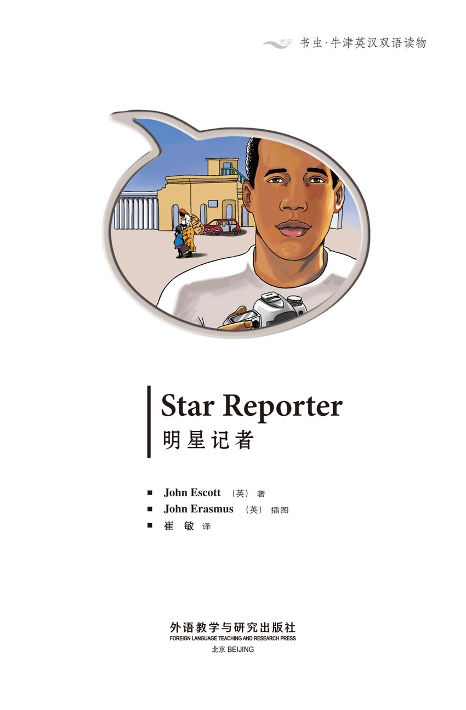
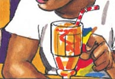
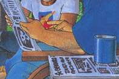
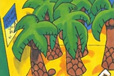
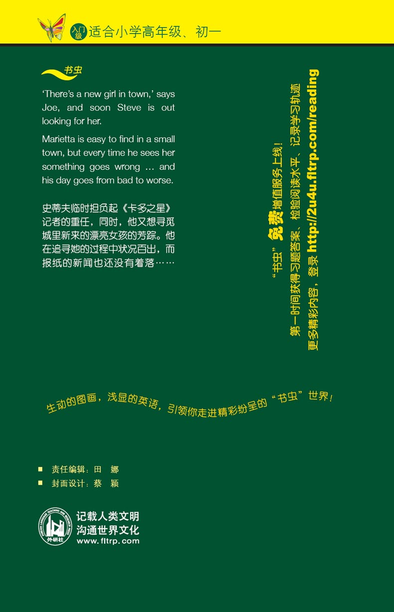

扉页

版权页
京权图字：01-2013-7810
Published by arrangement with Oxford University Press for sale in the People's Republic of China only and not for export therefrom. This edition is for sale in the mainland of China only, excluding Hong Kong SAR, Macao SAR and Taiwan.
© Oxford University Press 2008
Oxford is a registered trademark of Oxford University Press
图书在版编目（CIP）数据
明星记者：英汉对照／（英）埃斯科特（Escott, J.）著；（英）伊拉斯谟（Erasmus, J.）绘；崔敏译．—北京：外语教学与研究出版社，2013.11
（书虫·牛津英汉双语读物）
书名原文：Star reporter
ISBN 978-7-5135-3775-9
Ⅰ．①明… Ⅱ．①埃…②伊…③崔… Ⅲ．①英语—汉语—对照读物②短篇小说—英国—现代 Ⅳ．①H319.4：I
中国版本图书馆CIP数据核字（2013）第272353号
出版人 蔡剑峰
责任编辑 田 娜
封面设计 蔡 颖
出版发行 外语教学与研究出版社
社 址 北京市西三环北路19号（100089）
网 址 http://www.fltrp.com
版 次 2013年12月第1版
书 号 ISBN 978-7-5135-3775-9
制售盗版必究 举报查实奖励
版权保护举报电话：（010）88817519
内容简介
内容简介
史蒂夫住在卡多，他爸爸是《卡多之星》报的编辑。可今天《卡多之星》的记者生病了，史蒂夫的爸爸想为本期周报寻找一些令人感兴趣的内容。“或许你可以帮我找一些。”他对史蒂夫说。史蒂夫能找到些什么呢？这周卡多有什么新鲜事？
史蒂夫的朋友乔说：“城里新来了一个女孩！她个子高挑，有着红色的头发和亲切的微笑……她叫玛丽埃塔。”
玛丽埃塔是谁？或许这可以成为史蒂夫为本期报纸提供的报道。但是他必须先遇到她——这可不太容易。
目录
Star Reporter 明星记者

GLOSSARY 词汇表
GLOSSARY
词汇表
buy v. give someone money for something 买
camera n. the thing you take photographs with 照相机
editor n. an editor's work is to get a newspaper ready to read 编辑
fall v. suddenly come down 摔下；倒下
film n. the thing you put in a camera to take photographs 胶卷
gas n. petrol; you put it in a car to make the car go 汽油
hope v. want something to happen later 希望
librarian n. a person who works in a library 图书管理员
library n. you can get books from a library, read them, and then take them back 图书馆
maybe adv. perhaps 或许
newspaper n. paper where you can read about the things that are happening every day 报纸
reporter n. someone who writes for a newspaper 记者
sell v. give someone something, and get money for it 卖
shush inter. a noise you say to make someone quiet 嘘
wet adj. covered with water 湿的
world n. every country is in the world 世界
ACTIVITIES 阅读练习
Star Reporter
ACTIVITIES
阅读练习
ACTIVITIES
Before Reading
1 Look at the picture on the cover of the book. Now answer these questions.
1) Where do you think the story happens?
a □ France.
b □ South Africa.
c □ America.
d □ Japan.
2) Do you think the story is about...
a □ ... young people?
b □ ... old people?
c □ ... children?
2 Read the back cover of the book. Do you think the story is...
a □ ... frightening?
b □ ... sad?
c □ ... happy?
ACTIVITIES
While Reading
1 Answer these questions.
1) Who is the new girl in town?
2) What is the Cado Star?
3) What is Ned Reit's job?
4) Who is ill?
5) Where does Steve need to take some books?
6) What does Marietta need to get for her camera?
2 Are these sentences true (T) or false (F)?
1) Steve gets wet.
T □／F □
2) Marietta takes some pictures of dogs.
T □／F □
3) The children are waiting in the bookshop.
T □／F □
3 Who says or thinks these words?
1) 'it's Cado's weekly newspaper.'
2) '... there's a nice face to go with my drink!'
3) 'Next time, look at your drink, Steve, not at girls!'
4 Now answer these questions.
1) Marietta goes to the Cado Star offices. Who does she see there?
2) What does Marietta want to sell?
3) Who sees Marietta coming out of the newspaper offices?
4) Who has got a 1970 Cado Star?
5) Who is living in the old Potter house?
5 Answer these questions.
Who...
a ... wants to write about Bud Ritchie?
b ... likes Paris?
Where ...
c ... are the 'biggest and most beautiful mountains in the world'?
d ... is the cat?
6 Before you read the end of the story, can you guess what happens?
1) Marietta climbs up the tree to get the cat and falls down.
YES □／NO □
2) Steve falls into the water.
YES □／NO □
3) The cat falls into the water.
YES □／NO □
4) Bud Ritchie goes to work for the Cado Star.
YES □／NO □
5) Marietta takes a photograph of Steve falling from the tree.
YES □／NO □
6) Marietta sells a picture to the Cado Star.
YES □／NO □
7) Marietta and Steve become friends.
YES □／NO □
ACTIVITIES
After Reading
1 Put these ten sentences in the right order.
a □ Marietta gets some film for her camera at the camera shop.
b □ Steve goes to the café to get a drink.
c □ Joe phones Steve to tell him that there's a new girl in town.
d □ Marietta goes to see Ned Reit at the Cado Star offices.
e □ Steve gets his picture in the Cado Star.
f □ Ned Reit tells Steve, 'Ted Seymour is ill. He can't work this week.'
g □ Steve falls out of the tree into the water.
h □ Marietta takes photographs of the children in the library.
i □ Pattie says, 'Next time look at your drink, Steve, not at girls!'
j □ Steve sees Wilbur Pickett's old 1970 Cado Star.
2 Look at these pictures, then answer the questions.
Whose arm is this?
What happens next?

Who are these people?
What are they looking at?

What are these?
What happens next?

3 Use these words to join the sentences together.
but of and because
1) Steve wants to meet Marietta. He thinks she's beautiful.
2) Ned Reit needs something interesting to put in the Cado Star. His reporter is ill.
3) Bud Ritchie is back in Cado. His old friend Wilbur Pickett wants to talk to him.
4) Marietta takes some pictures. Some beautiful horses.
TRANSLATION 参考译文
TRANSLATION 参考译文
STAR REPORTER
明星记者
Hi, Joe …
Hi, Steve! Listen, there's a new girl in town!
A new girl? Tell me more.
She's tall, with red hair and a nice smile, and … what? … Yes, I think her name is Marietta …
嗨，乔！
嗨，史蒂夫！听着，城里新来了一个女孩！
新来了一个女孩？给我好好说说。
她个子高挑，有着红色的头发和亲切的微笑，而且……什么？……对了，我想她叫玛丽埃塔。
Where can I find this girl? Come on, Joe, tell me. I'm your best friend.
Who knows? Listen, I must go now. We're going away for two or three days and my father's waiting in the car. I hope she's here when I come back!
我在哪儿可以找到这个女孩？快点，乔，告诉我！我是你最好的朋友。
谁知道呢？听着，我现在必须要走了。我们要离开两三天，我爸爸正在车里等我。希望我回来的时候她在这儿！
Steve's father, Ned Reit, is editor of the weekly newspaper, the Cado Star.
Ted Seymour is ill. He can't work this week.
Oh dear! And he's your only reporter.
I need to find something interesting for this week's newspaper. Maybe you can find something for me, Steve.
What? Oh, yes, maybe.
Excuse me, I must go out.
Don't forget to take those books back to the library.
OK, later. I'm going to the shops first.
史蒂夫的爸爸内德·赖特是《卡多之星》周报的编辑。
特德·西摩生病了，这周都不能来上班。
老天！他是你唯一的记者。
我需要为这期报纸找一些令人感兴趣的内容。或许你可以帮我找一些，史蒂夫。
什么？哦，也许能吧。
失陪了，我得出去了。
别忘了把那些书还给图书馆。
好的，稍后就去。我要先去商店。
I want to get some good pictures today, but first I must get a film for my camera.
Who is she? Is it the new girl in town?
Joe's right. She's very beautiful, and … oh no!
今天我想拍一些精彩的照片，不过得先给照相机买卷胶卷。
她是谁？是城里新来的女孩吗？
乔说得对。她很漂亮，而且……哦，不好！
Can I help you?
I need some film for my camera.
There she is again!
Where is she?
您买点儿什么？
我想买些照相机胶卷。
她也在这儿！
她去哪儿了？
Now, where can I get some good photographs? Something I can sell to a newspaper, maybe.
I don't like this. My jeans are all wet!
I need some gas.
嗯，我去哪儿才能拍到一些好照片呢？或许拍些可以卖给报社的照片。
我不喜欢这样。我的牛仔裤都湿透了。
我得去加油了。
What beautiful horses! Maybe I can sell this photograph.
What's the matter with you? What are you doing?
Sorry, I …
Who is that boy?
好漂亮的马呀！或许这张照片我可以拿去卖。
你怎么回事？你在干什么？
对不起，我……
那个男孩是谁？
What's happening at the library? Oh, it's a reading day. The librarian is reading to the children in a minute. Maybe I can get some good pictures.
I must take my library books back.
Is that her car?
Where is she?
图书馆有什么活动？哦，今天是读书日。图书管理员马上要给孩子们读书了。也许我可以拍到一些不错的照片。
我必须把书还回图书馆。
那是她的车吗？
她在哪儿？
Can I take some pictures?
Yes, that's OK. Maybe you can sell them to the Cado Star.
What's the Cado Star?
It's Cado's weekly newspaper.
That's interesting.
There she is! What's she doing?
我可以拍一些照片吗？
好，没问题。也许你可以把照片卖给《卡多之星》。
《卡多之星》是什么？
是卡多本地的周报。
有意思。
她在那儿！她在干什么？
Oh! What's …!
That makes a good picture!
Now, where can I get a drink?
There's a café across the street. I can get a drink there.
哦，真是……！
这是一张好照片！
嗯，我去哪儿喝点东西呢？
马路对面有一家咖啡馆。我可以去那儿喝点东西。
I need a drink after that. Oh, and there's a nice face to go with my drink!
Hi, Steve.
Hi, Pattie. Bring me an orange juice, please.
Shall I tell her that my Dad is editor of the Cado Star?
Oh, no!
我想喝点东西压压惊。哇！我喝东西时还能欣赏到一张漂亮的脸！
你好，史蒂夫。
你好，帕蒂。请给我一杯橙汁。
我应该告诉她我爸爸是《卡多之星》的编辑吗？
哦，不！
Next time, look at your drink, Steve, not at girls!
Shush, Pattie!
How can I get to the Cado Star offices? Are they far away?
No, they're in the next street. About five minutes' walk.
Thanks.
下次看着你的饮料，史蒂夫，别老盯着女孩！
嘘，帕蒂！
到《卡多之星》报社怎么走？离这儿远吗？
不远，就在另一条街上。大概走五分钟就到了。
谢谢。
Good morning. Can I help you?
Do you buy photographs for the newspaper?
Yes, but they must be interesting. Why? Do you have some?
Maybe. When do you need them for this week's newspaper?
By tomorrow.
OK.
She's coming out of Dad's office!
早上好。你有事吗？
你们报纸买照片吗？
买啊，不过照片必须有趣。怎么？你有照片要卖吗？
也许有一些。你们什么时候要这周报纸的照片？
截止到明天。
好的。
她从爸爸的办公室出来了！
Who's that girl?
She wants to sell me some photographs for the newspaper, I think.
Oh!
Is she coming back?
How do I know? Why?
Oh, nothing. It doesn't matter.
I need something interesting for my newspaper, Steve. Forget about girls and try and find me something!
那个女孩是谁？
我想她是想卖给我一些报纸照片。
哦！
她会回来吗？
我怎么知道？怎么了？
哦，没事。没什么。
我的报纸需要一些有意思的内容，史蒂夫。不要总惦记着女孩，想办法给我找些素材！
Hi, Mr Pickett!
Hi, Steve. Come and talk to me for a minute. There is something I want you to see.
Look, Steve. This is an old Cado Star, from 1970. I've got a lot of old Stars and I like to read them sometimes.
That's interesting, Mr Pickett.
你好，皮克特先生！
你好，史蒂夫！过来和我聊一会儿。我想给你看点东西。
瞧，史蒂夫，这是一份1970年的《卡多之星》旧报纸。我有很多份《卡多之星》旧报纸，我喜欢偶尔拿出来看一看。
有意思，皮克特先生。
Read this about my old school friend, Bud Ritchie. He's a writer.
People tell me that Bud is back in Cado. He's living in the old Potter house. I want to phone him later. Maybe he can come and tell me all about his time away.
I need something interesting for my newspaper.
看看这一篇讲的是我念书时的好朋友巴德·里奇。他是个作家。
有人告诉我巴德回到了卡多。他住在老波特屋里。我打算回头给他打个电话。或许他会来这儿给我好好讲讲他在外面的日子。
我的报纸需要一些有意思的内容。
Can I have that newspaper for a day or two, Mr Pickett?
Yes, here you are.
Maybe I can write about Bud Ritchie's return. I must try and make Dad happy.
Excuse me, are you Mr Ritchie?
Yes, that's right.
Oh, that's interesting! I can remember that. And now I'm back in dear old Cado again.
您的报纸可以借我一两天吗，皮克特先生？
没问题，给你。
或许我可以写写巴德·里奇回来的事。我得想办法让爸爸开心。
打扰了，请问您是里奇先生吗？
是的，没错。
哦，太有趣了！我还记得这篇报道。现在我又回到了亲爱的老卡多。
Can I ask you some questions about your time away, Mr Ritchie? And your writing?
Yes, of course. What are you? A newspaper reporter?
My father is editor of the Cado Star. His only reporter is ill, and he needs something interesting for this week's paper.
Am I interesting? Yes, maybe I am.
Steve asks Mr Ritchie for paper and pen, and then Mr Ritchie begins to tell him about his time away.
我可以问问您离开的那段时间的事吗，里奇先生？还有您的写作。
当然可以。你是做什么的？报社记者？
我爸爸是《卡多之星》的编辑。他唯一的记者生病了，他得为本周的报纸找一些有趣的内容。
我有趣吗？或许是吧。
史蒂夫向里奇先生要来了纸和笔，然后里奇先生开始讲述他离开的那段日子。
The Himalayas are the biggest and most beautiful mountains in the world, Steve …
I like Paris. It's exciting …
You must go to Africa, one day, Steve …
喜马拉雅山脉是世界上最大最美丽的山脉，史蒂夫……
我喜欢巴黎。那里让人兴奋……
你将来一定要去趟非洲，史蒂夫……
Across the street, a cat is climbing up a tree.
… and India is a most interesting country. The people there are …
Excuse me, Mr Ritchie, but there's a cat in that tree. It can't get down.
街对面，一只猫正在爬树。
……印度是一个特别有趣的国家。那里的人……
不好意思，里奇先生。那棵树上有一只猫。它下不来了。
Oh, dear.
It's OK, I can get it down.
Be careful!
Oh no! I'm falling!
哦，天哪！
没事，我可以把它弄下来。
小心！
哦，不！我掉下来了！
Here, give me your hand.
Oh! Thanks.
You're not having a good day!
No, I'm not.
The cat is OK.
This is Marietta, my daughter.
Your daughter!
嘿，把手给我。
哦！谢谢。
你今天过得不怎么样啊！
是啊，不怎么样。
猫没事。
这是玛丽埃塔，我女儿。
您女儿！
Yes. Marietta, this is Steve Reit. His father is editor of the Cado Star.
I think I've got a good picture. Maybe I can sell it to your father!
A week later …
You take good photographs, Marietta.
And you're a good newspaper reporter, Steve.
是。玛丽埃塔，这是史蒂夫·赖特。他爸爸是《卡多之星》的编辑。
我想我拍到了一张好照片。或许可以卖给你爸爸！
一周后……
你的照片拍得不错，玛丽埃塔。
你是个不错的新闻记者，史蒂夫。
封底
